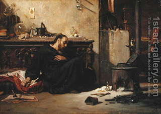

Bava Kamma 41 - An Ox Kills a Man
If an ox gored a person and he died , then if the ox was warned for goring, its owner pays redemption payment , and if it was innocent, he is exempt from redemption, but in both cases the ox is liable to death.
The same law holds where the victim was a minor .
If the ox gored a Canaanite slave or a maidservant , the ox is stoned, and the owner gives thirty sela (about $5,000) no matter whether the slave is worth a hundred times more or a hundred times less than this amount.